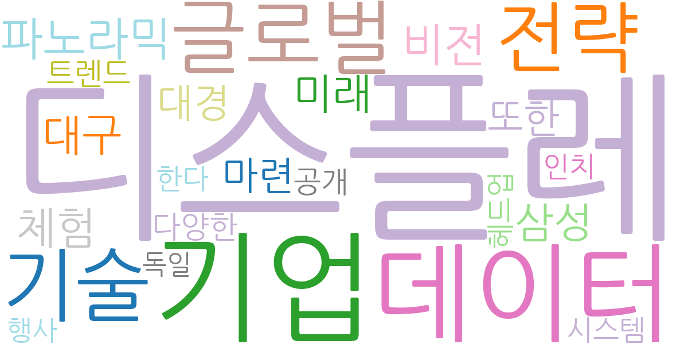
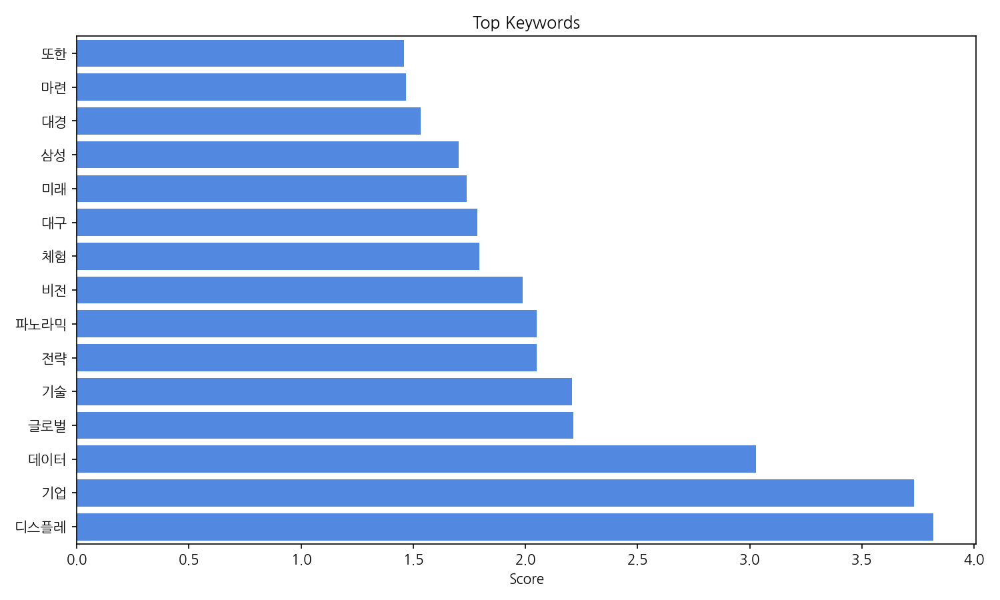
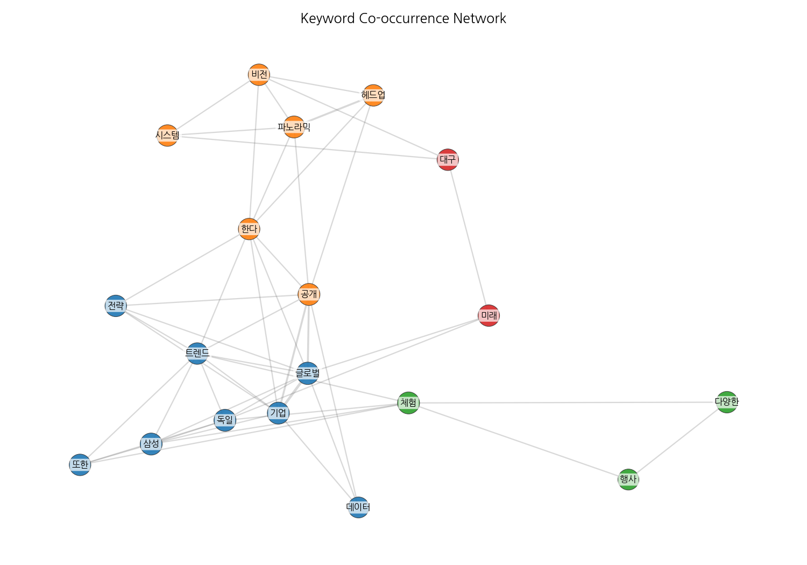
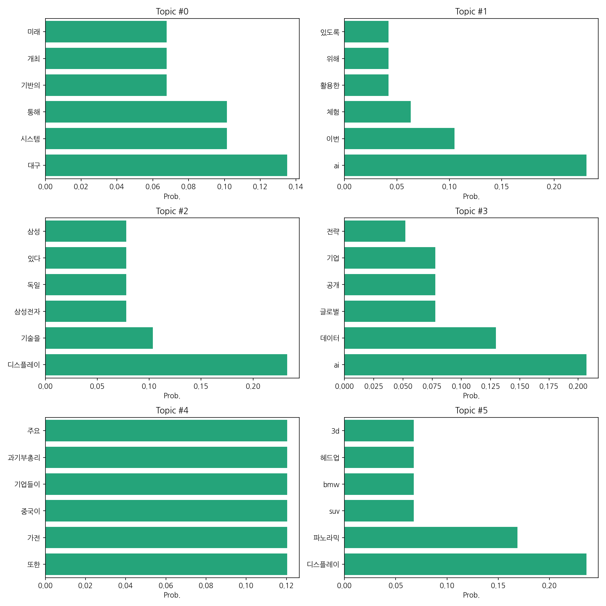
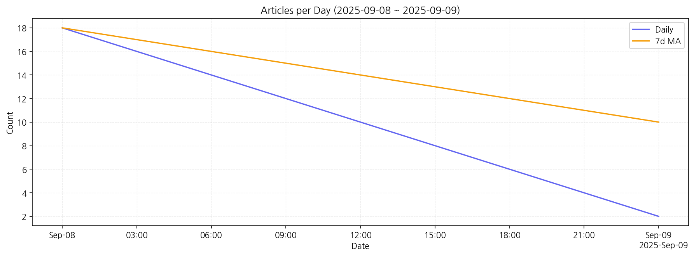

제공된 데이터를 바탕으로 한국어 뉴스 기사의 핵심 맥락을 분석해 보겠습니다.
핵심 맥락: 데이터는 크게 세 가지 주제로 묶을 수 있습니다. 첫째, 대구를 중심으로 한 미래 기술 관련 행사 및 시스템 구축 (topic 0)과 AI 기술 활용 및 체험 관련 뉴스 (topic 1, 3)입니다. 둘째, 디스플레이 기술 발전 및 관련 기업들의 활동 (topic 2, 5)이 주요 내용입니다. 삼성전자, 현대모비스 등의 기업과 최신 디스플레이 기술, 자동차 헤드업 디스플레이 등이 포함됩니다. 셋째, 글로벌 경제 및 기업 전략 관련 뉴스 (topic 3, 4)로, AI 데이터 활용, IPO, 중국 기업들의 가전 시장 동향 등이 다루어지고 있습니다.
최근 변화/스파이크: 9월 8일에는 18건의 기사가 보도되었으나, 9월 9일에는 2건으로 급감했습니다. 이는 특정 행사의 종료 또는 뉴스 주기의 변화를 반영하는 것으로 추측됩니다. 9월 8일의 높은 기사 수는 특정 이벤트 또는 뉴스 발표와 관련이 있을 가능성이 높습니다.
실무 인사이트:
뉴스 주제별 모니터링 시스템 강화: 각 토픽에 해당하는 키워드를 활용하여 뉴스 모니터링 시스템을 구축하고, 일일/주간 보고서를 통해 주요 이슈를 신속하게 파악합니다. 특히, 급증 또는 급감하는 토픽에 대한 심층 분석을 통해 원인을 파악하고 대응 전략을 수립합니다.

| Rank | Keyword | Score |
|---|---|---|
| 1 | 디스플레 | 3.819 |
| 2 | 기업 | 3.733 |
| 3 | 데이터 | 3.027 |
| 4 | 글로벌 | 2.213 |
| 5 | 기술 | 2.206 |
| 6 | 전략 | 2.049 |
| 7 | 파노라믹 | 2.049 |
| 8 | 비전 | 1.987 |
| 9 | 체험 | 1.794 |
| 10 | 대구 | 1.787 |
| 11 | 미래 | 1.739 |
| 12 | 삼성 | 1.702 |
| 13 | 대경 | 1.532 |
| 14 | 마련 | 1.467 |
| 15 | 또한 | 1.458 |




제공된 데이터를 바탕으로 한국어 뉴스 기사의 핵심 맥락을 분석해 보겠습니다.
핵심 맥락: 데이터는 크게 세 가지 주제로 묶을 수 있습니다. 첫째, 대구를 중심으로 한 미래 기술 관련 행사 및 시스템 구축 (topic 0)과 AI 기술 활용 및 체험 관련 뉴스 (topic 1, 3)입니다. 둘째, 디스플레이 기술 발전 및 관련 기업들의 활동 (topic 2, 5)이 주요 내용입니다. 삼성전자, 현대모비스 등의 기업과 최신 디스플레이 기술, 자동차 헤드업 디스플레이 등이 포함됩니다. 셋째, 글로벌 경제 및 기업 전략 관련 뉴스 (topic 3, 4)로, AI 데이터 활용, IPO, 중국 기업들의 가전 시장 동향 등이 다루어지고 있습니다.
최근 변화/스파이크: 9월 8일에는 18건의 기사가 보도되었으나, 9월 9일에는 2건으로 급감했습니다. 이는 특정 행사의 종료 또는 뉴스 주기의 변화를 반영하는 것으로 추측됩니다. 9월 8일의 높은 기사 수는 특정 이벤트 또는 뉴스 발표와 관련이 있을 가능성이 높습니다.
실무 인사이트:
뉴스 주제별 모니터링 시스템 강화: 각 토픽에 해당하는 키워드를 활용하여 뉴스 모니터링 시스템을 구축하고, 일일/주간 보고서를 통해 주요 이슈를 신속하게 파악합니다. 특히, 급증 또는 급감하는 토픽에 대한 심층 분석을 통해 원인을 파악하고 대응 전략을 수립합니다.
| Idea | Target | Value Prop | Score |
|---|---|---|---|
| 뉴스 기사 맥락 분석 및 예측 플랫폼 | 대기업 홍보/전략 부서, 시장조사 기관, 투자사, 경영 컨설팅 회사 | AI 기반 자연어 처리 기술을 활용하여 뉴스 기사의 핵심 맥락을 분석하고, 주요 키워드 및 트렌드를 시각화하여 제공합니다. 뉴스 기사량 변화를 감지하고 예측하여, 기업의 신속한 의사결정을 지원합니다. 경쟁사 분석 및 시장 동향 예측 기능을 통해 경쟁력 우위를 확보할 수 있습니다. | 4.5 |
| 디스플레이 기술 동향 분석 및 경쟁력 강화 솔루션 | 디스플레이 관련 제조 기업, 부품 공급업체, 연구소 | 뉴스 기사, 특허 정보, 학술 논문 등 다양한 데이터 소스를 분석하여 디스플레이 기술 동향을 종합적으로 제공합니다. 경쟁사의 기술 개발 현황 및 전략을 분석하여 시장 경쟁력 강화 방안을 제시합니다. 특허 분석 및 기술 예측 기능을 통해 미래 기술 트렌드를 선제적으로 파악할 수 있습니다. | 4.0 |
| AI 기반 뉴스 모니터링 및 이슈 대응 시스템 | 대기업 홍보팀, 위기관리팀, PR 에이전시 | AI 기반 자연어 처리 기술을 활용하여 뉴스 기사를 실시간으로 모니터링하고, 주요 이슈를 자동으로 감지합니다. 뉴스 기사량 변화를 분석하여 위기 상황을 조기에 감지하고, 효과적인 대응 전략을 수립할 수 있도록 지원합니다. 다양한 보고서 및 알림 기능을 통해 신속한 의사결정을 지원합니다. | 3.8 |
| 대구 미래 기술 행사 정보 플랫폼 | 대구 지역 미래 기술 관련 기업, 연구소, 대학, 행사 참가자 | 대구 지역의 미래 기술 관련 행사 정보를 한 곳에 모아 제공하는 플랫폼입니다. 행사 일정, 참가 방법, 연사 정보 등을 제공하고, 참가자 간 네트워킹을 위한 기능을 제공합니다. AI 기반 추천 시스템을 통해 개인 맞춤형 행사 정보를 제공합니다. | 3.5 |
| 글로벌 가전 시장 동향 분석 서비스 | 국내 가전 제조 기업, 수출입 기업 | 다양한 데이터 소스(뉴스, 시장 보고서, 관세 데이터 등)를 활용하여 글로벌 가전 시장 동향을 분석하고, 주요 경쟁 기업의 전략 및 기술 개발 현황을 제공합니다. 시장 예측 및 리스크 관리 기능을 통해 기업의 효율적인 의사결정을 지원합니다. 특히 중국 시장 분석에 특화된 정보를 제공합니다. | 3.2 |